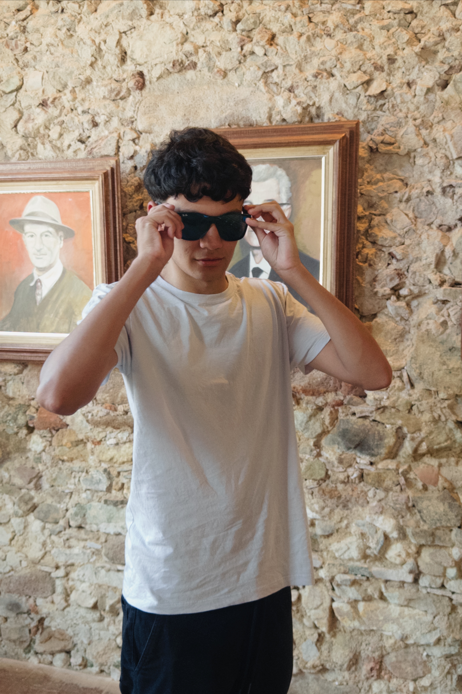

Rafael Yuddi :)
Desenvolvedor 💻
Prazer! Me chamo Rafael Yuddi, Tenho 17 Anos. Atualmente estou estudando Programação, e esse é meu Portifólio pessoal. Nele, conto mais sobre mim, Falo sobre minhas capacidades e Mostro minhas Competências.
Hoje, estou Buscando a primeira oportunidade na área de Tecnologia da Informação para aplicar meus Conhecimentos em Desenvolvimento de Software.
Sobre
Cursando Análise e Desenvolvimento de Sistemas na PUCPR, sou Disciplinado e Focado por desenvolvimento web,programação orientada a objetos e engenharia de software. Sou otimista e busco viver a vida aproveitando a jornada da melhor maneira Possivel e Evoluir minhas habilidades. Com objetivode é desenvolver sites e sistemas que sejam realmente úteis, de fácil uso e sátisfazendo o pedido do usuario. Acredito que um código bem estruturado com as tecnologias certas faz toda diferença no resultado final. Nascido Tenho Práticado Programação Web e Linguagens com Python, Java, Java POO, JavaScript, Html e CSS. Havendo sabedorias com Banco de dados e outras Ferramentas como MySQL,VSCode, Git e GitHub..
Conhecimentos
Em breve, meus estudos.
Exercícios e Projetos
Em breve, meus exercícios e projetos.
Contato
Em breve, as formas de contato.